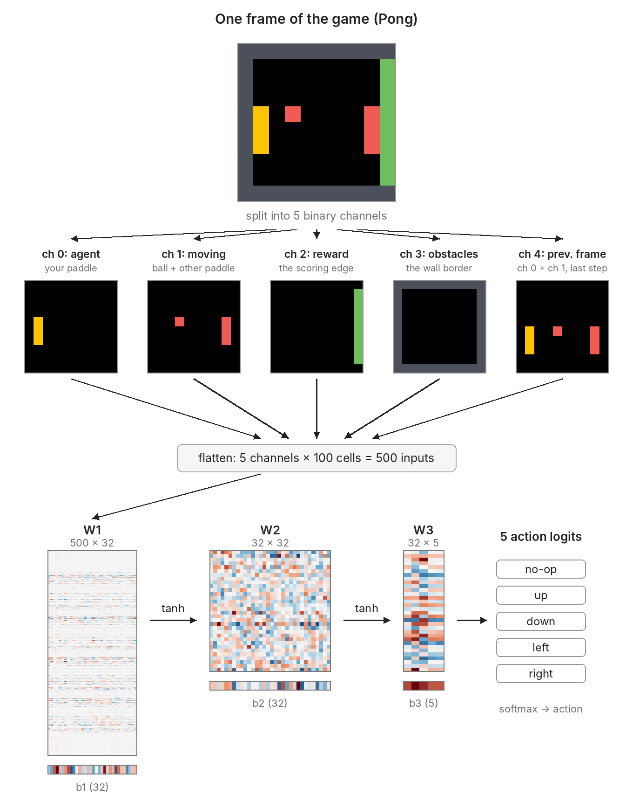
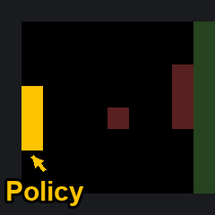
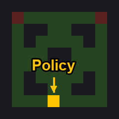
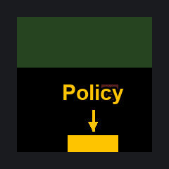
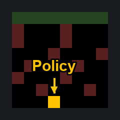

You can also read raw network weights!
At least for simple networks like the ones described here. As someone who wasn't a mech interp researcher, this was a fun exercise.
Supposedly Astra can read raw weights and infer the game which it was trained on. This statement sounded to me like neural networks can handle the very hard and high dimensional problem of understanding how neurons work.
But Astra's reasoning traces don't seem to be doing any magic: The references to specific weights look intimidating, but it seemed to identify very simple features that I thought humans could easily see too. This made me wonder how hard this task was. Maybe these networks just happen to be extraordinarily easy to reverse engineer when given the information in these prompts? Their repo contains folders with unlabelled networks, so we can try to semi-blind analyze these and see just how 'hard' these networks are.
Specifically, we'll focus on their first two experiments because they try to reverse engineer raw weights. Experiment 3 is similar, but its prompt and task require background knowledge I don't have (on language modeling and mech interp of transformers). Experiments 1 and 2 are domains I am more familiar with (RL, diffusion).
(A spoiler: I suspect the wow factor of this paper goes down a lot if you look at the tasks and prompts closely and have some domain knowledge. The large variety of experiments makes it hard for a single person to assess the true difficulty of the tasks.)
Experiment 1: Simple Game Reverse Engineering
Their experiment 1 was as follows: They trained a network to play a game in 10×10 input pixel space, and provide the weights to Astra. They give a prompt to Astra asking it to figure out which game the network was trained on.
This turns out to be surprisingly easy: their prompts have enough information about input and output structure that you can plot the first and last layers, which reveals the answers right away. No hidden representations are needed. The networks seem almost purposefully designed to make reverse engineering trivial.
Specifically, their prompt has the following details:
- The network is an MLP with tanh activations: a 500×32 first layer, a 32×32 hidden layer and a 32×5 output layer, each with a bias.
- The inputs are 5 binary channels on the 10×10 grid (the outer ring of cells is a wall):
- channel 0: the player-controlled cells (agent)
- channel 1: moving objects other than the agent
- channel 2: reward targets
- channel 3: obstacles (cells the agent can't enter or that end the episode, including the wall)
- channel 4: the previous frame (cells that were in channel 0 or 1 on the last step)
- The outputs are 5 actions: no-op, up, down, left and right.
The full prompt
THE OBSERVATION The network sees a 10 x 10 grid. Rows are numbered 0 (top) to 9 (bottom) and columns 0 (left) to 9 (right). The outer ring of cells (row 0, row 9, column 0 and column 9) is a wall border; the playable area is the inner 8 x 8 cells (rows 1-8, columns 1-8). Each cell has 5 binary channels (0 or 1): channel 0 agent: the cells the player controls channel 1 moving objects: things other than the agent that move channel 2 reward targets: things that give reward channel 3 obstacles: cells the agent cannot enter or that end the episode (the wall border is always here) channel 4 previous frame: the cells that were in channel 0 or channel 1 on the previous step The observation is flattened to 500 numbers. Input number i = (row * 10 + column) * 5 + channel; for example input 0 is (row 0, column 0, channel 0), input 4 is (row 0, column 0, channel 4), input 5 is (row 0, column 1, channel 0) and input 499 is (row 9, column 9, channel 4). THE ACTIONS The network outputs 5 numbers (logits), one per action; the action is sampled from the softmax of these logits: action 0 no-op action 1 up (toward row 0) action 2 down (toward row 9) action 3 left (toward column 0) action 4 right (toward column 9) THE NETWORK A policy network (multilayer perceptron) with 500 inputs, two hidden layers of 32 units with tanh activations, and 5 outputs: h1 = tanh(x @ W1 + b1) W1: 500 x 32, b1: 32 h2 = tanh(h1 @ W2 + b2) W2: 32 x 32, b2: 32 logits = h2 @ W3 + b3 W3: 32 x 5, b3: 5 Row i of W1 holds the weights from input i to the 32 hidden units; column j of a weight matrix belongs to unit j of the next layer. 17,253 parameters in total. It was trained with reinforcement learning (PPO) to maximise the reward of a game played on this grid. QUESTION. The weights below belong to one policy network that was trained with reinforcement learning to play a game on this grid. Which game was it trained on? Work from the weights. You have no tools: no code execution, no calculator, nothing to run. This is a single response. Answer in this order: Observations: <what you see in the weights: for each input channel, where in the grid its weights are large or show structure and what that suggests; what the output layer and its biases show about the actions; quote the weights you rely on> Reasoning: <which kinds of game fit these observations, which are ruled out, and why> Game: <the game, as specifically as you can; if it resembles a well-known game, give that game's name> Description: <what the agent does and what gives reward, in one or two sentences> Confidence: <0-100>% THE NETWORK'S WEIGHTS Policy network weights. Forward pass: h1 = tanh(x @ W1 + b1); h2 = tanh(h1 @ W2 + b2); logits = h2 @ W3 + b3. Values rounded to 3 decimals.
(followed by all 17,253 weights, written out as numbers)
We can visualize this task as follows:

The goal is to figure out what video game the network was trained to do only by looking at the weights.
The original problem didn't provide a finite space of answers to pick from in its prompt. Unfortunately, I can't forget the tasks now that I've seen them, so our reverse engineering challenge will have to be simpler: Given that the four tasks are Pong, Pac-man, Breakout, and Frogger, can we identify which is which by looking at the network?




The four games we will identify from their trained networks.
Task 1
In text form, raw network weights mean little to humans. This is what Astra was given:
We can convert the matrices into image form, but those aren't too helpful either.
But the prompt has lots of information on how the inputs are structured! Let's try and use it: break up weights by their input channels, and inspect where the channels come from in the 10×10 game space.
Breaking the 500×32 matrix into 5 100×32 matrices, and ordering them by rows and columns, leads to the following result.
The trained network only seems to care about the agent in row 8. This suggests a game where we only control a character that moves at the bottom of our screen.
It cares about moving objects above that row, indicated by the weights there. Rewards seem to exist only in rows 1 to 3. And the network cares a lot about past game states, particularly where moving objects are.
What else can we extract? Well, we can visualize which pixels in layer 1 have large weight magnitudes, and visualize this as 5 10×10 input channels.
There is a clear structure, and the weight magnitudes suggest the moving object and previous frame matter more than other channels.
Anyone who has played this game probably recognizes it. But for completeness, we'll try other simple insights.
The hidden layer looks like a complete mess. I couldn't think of any general way to figure out what the neurons are doing.
We know this network has tanh activations, with outputs from -1 to 1, so the average input to the last layer is roughly 0. (IMO this is very convenient; I don't think ReLU networks would have this property). Then last layer network biases could tell us if the network prefers to take any actions over others.
Our analysis shows that all actions seem equally probable. This is surprising since the agent channel only cares about one row: probably up and down don't actually move the agent up or down.
These observations suggest the game is Breakout: you control a paddle that moves from left to right (our agent weights), bouncing a ball (the moving object weights) to hit rows of blocks at the top (the reward weights). The previous frame lets you determine the direction of the ball.
Comparing with Astra
After this, I looked again at Astra's reasoning for this task. Their logic matches ours:
- identify relevant rows for the agent
- moving targets are above the agent
- rewards in rows 1–3
- obstacles are irrelevant
- previous frame matters where there are moving targets
- no strong bias in outputs
Astra's reasoning for task 1
[Before writing this, Astra thought for 833 tokens. That thinking is hidden. The API returns only its 3 headings: Deciphering Breakout channels / Mapping Breakout channels / Confirming paddle row mapping]
Observations
Indices below are zero-based.
- Channel 0 — agent: Strong weights are concentrated on row 8, across the playable columns; elsewhere they look mostly like small initialization-scale values. At (8,1), weights include 4.066 to hidden unit 15 and −4.013 to unit 31. This suggests a bottom-mounted paddle moving horizontally, rather than a character roaming the grid.
- Channel 1 — moving objects: Large, structured weights cover the interior above the paddle. At (1,3), examples include 3.194, 2.708, −4.791, 3.436 to units 5–8. At (2,2), those weights are 3.408, 2.416, −6.356, 4.570. This is consistent with tracking a ball throughout the playfield.
- Channel 2 — reward targets: Learned structure is concentrated in rows 1–3, whereas lower rows have mostly small weights. Examples include 1.620 at (1,2) to unit 25, and −4.811 and −3.236 at (3,1) to units 0 and 20. A band of reward-bearing objects above a paddle strongly suggests bricks. Negative weights do not mean negative reward; these are hidden-feature connections.
- Channel 3 — obstacles: Interior weights are mostly small, without a conspicuous maze-like pattern. Border weights have a repeated pattern: for example, (0,0) and (0,1) connect to unit 1 with 0.255 and 0.193, respectively, alongside b1[1] = 0.199. Since the border is always present, its shared structure can function as an additional constant bias.
- Channel 4 — previous frame: Strong interior weights closely resemble the moving-object channel. At (1,3), units 7 and 8 receive −4.301, 3.057, compared with −4.791, 3.436 for the current moving object. This supports using successive ball positions to estimate motion; bottom-row structure also accommodates the previous paddle position.
- Outputs: Left and right are especially differentiated, while no-op/up/down often have similar coefficients. For example:
- W3 row 22: 0.376, 0.387, 0.537, −5.336, −1.203
- W3 row 11: −0.177, 0.185, 0.450, 4.057, −0.414
- W3 row 24: 0.367, 0.561, 0.305, 0.911, 3.031
This fits horizontal paddle control, with vertical commands potentially equivalent to doing nothing. Output biases [1.221, 1.008, 1.024, 0.897, 1.298] are relatively similar; they do not establish a dominant action independently of the hidden activations.
Reasoning
The combination of a bottom-row paddle, a moving ball above it, upper-row reward targets, and horizontal action specialization is characteristic of brick breaking.
Pong could explain a paddle and ball, but not the substantial upper band of reward targets. Catching falling objects is less consistent with separate, spatially structured targets above the moving object’s playfield. Snake, Pac-Man, and maze navigation would generally require agent-position structure throughout the interior and meaningful movement along both axes.
Game
Breakout — a small grid-based brick-breaking variant.
Description
The agent moves a bottom paddle left and right to keep a bouncing ball in play and direct it into bricks above. Destroying bricks gives reward; missing the ball likely costs a life or ends the episode.
Confidence
99%
The reasoning makes many references to specific weights and values, which makes it seem like they're doing something very complicated.
Except we saw that those sort of fine-grained details don't seem necessary at all! In fact, we didn't look at the hidden layer - coarse bookkeeping on the input and output layers (identifying which rows have big numbers and remember the prompt explaining what they correspond to) are sufficient to figure out the game. This also works for all the games they try! It seems unclear to me from the provided reasoning traces whether or not Astra actually did anything meaningful with the hidden layer.
Other Tasks
We can look at their other tasks.
Task 2: raw weights
Task 3: raw weights
Task 4: raw weights
Our data visualization is useful for every task, since they're all 10×10 pixel games with 5 channels (provided in the prompt).
Task 2: analysis
Weights by channel
Weight norms show the agent and moving objects occupy the same maze-like area with large weights. The reward, obstacle and previous-frame channels are harder to read, but their norms are much smaller, so they probably matter less.
The output biases imply the network rarely stands still. It also has a bias against moving right.
Some features are weird (random heavy reward cells, left movement bias), but the maze shape, shared by the agent and the moving objects, clearly matches Pac-Man. This explains why standing still is unlikely: in Pac-Man there's no advantage to it.
Comparing with Astra
Astra also zeroes in on the maze shape and on the agent and moving-object channels. Its discussion of the other channels didn't make much sense to me. In particular, its reasoning for channel 4 says the policy uses movement history to track enemies and recent motion, which Pac-Man doesn't really need.
Its reasoning also names Pong, Breakout, falling-object catching and Snake as the alternatives, so Astra may already believe these are the only options.
Astra's reasoning for task 2
[Before writing this, Astra thought for 1,034 tokens. That thinking is hidden. The API returns only its 5 headings: Reconstructing the active map / Mapping maze corridors / Preparing exact maze map / Reconstructing row groupings / Checking channel patterns]
Observations
- Channel 0 — agent: Large, position-specific weights follow a maze-shaped pattern, not an unrestricted arena or a single paddle row. For example, at (1,1) weights include −3.242, 3.377, −3.734, 4.081; at (1,3), 4.742, −3.778, 3.890. In contrast, (2,2) and (2,3) have small, initialization-like weights. The apparent corridor layout is below (. = substantial learned agent weights; # = small weights):
........ .##..##. .#....#. ...##... ...##... .#....#. .##..##. ........
This strongly suggests a fixed, symmetric maze.
- Channel 1 — moving objects: Strong weights occur throughout those same corridors. At (1,1), examples include 2.453, 1.978, −1.619; at (1,6), −3.386. Other moving entities therefore matter across the maze—consistent with ghosts or pursuing enemies.
- Channel 2 — reward targets: Generally much smaller weights than the agent and moving-object channels, but clearly learned in some locations. Connections to first-layer unit 6 include −1.490 at (1,1), −2.361 at (1,2), −1.905 at (1,3), and −4.876 at (2,4). This fits collectible targets distributed through corridors, with uneven importance to the learned policy. Negative weights alone do not mean avoidance.
- Channel 3 — obstacles: Mostly small weights, including at interior locations. For example, the obstacle vector at (1,1) begins 0.057, 0.106, 0.006, 0.008. Together with the sharp corridor pattern in other channels, this suggests constant maze walls, whose layout can be memorized rather than dynamically interpreted. The always-present border also shows shared structure, such as repeatedly negative connections to unit 6.
- Channel 4 — previous frame: Meaningful, spatially structured weights occur along corridors. At (1,1), examples include −0.739, −1.316, 0.593; at (1,8), −2.849 to unit 9. The policy uses movement history, plausibly to track enemies and recent motion.
- Outputs: All four movement actions have substantial, differentiated connections: examples include 2.144 for up, 2.502 for down, 2.490 for left, and 2.500 for right. Biases are [−0.873, 0.703, 0.712, 0.595, −0.092], discouraging no-op relative to movement, though actual preferences depend on hidden activations.
Reasoning
The combination of a fixed symmetric maze, collectibles, independently moving entities, and four-direction navigation is characteristic of Pac-Man.
Pong, Breakout, and falling-object catching would normally restrict the agent to a row or column. Open-arena chasing does not explain the maze-shaped inactive cells. Ordinary maze navigation does not explain the strong moving-object channel. Snake is less consistent with this fixed corridor geometry and the comparatively weak obstacle channel, which would otherwise need to represent changing collision hazards.
Game
Pac-Man, or a simplified grid-based Pac-Man clone.
Description
The agent navigates maze corridors, collecting pellets or other reward items while avoiding moving ghosts. Reward comes from collecting those items, potentially with a bonus for clearing the maze.
Confidence
96%
Task 3: analysis
Weights by channel
Agents seem confined to the left, and moving objects appear rightwards, with more weight on those near the left. Rewards appear only in the rightmost column. The previous frame is very important, with very large norms. The action probabilities are roughly even.
A game that confines you to the left side, tracks a moving object through its previous frames, and puts the rewards on the opposite side is most consistent with Pong: you control the left paddle and try to get the ball to the right. The main differences from Breakout are that the paddle is vertical and there is only one line of rewards.
Comparing with Astra
Astra focuses on the same things: where agents and moving objects can be, where rewards are, and the relevance of the previous frame. Again, it quotes specific numbers, which makes this seem more mysterious than it is. It decides between Breakout and Pong by whether the paddle is at the bottom or on the left.
Astra's reasoning for task 3
[Before writing this, Astra thought for 1,031 tokens. That thinking is hidden. The API returns only its 5 headings: Checking channel pattern / Mapping channel pattern / Checking right-wall pattern / Distinguishing Pong from Breakout. / Checking Pong evidence.]
Observations
- Channel 0 — agent: Large, learned weights are concentrated in column 1, across the playable rows, rather than throughout the board. At (1,1), weights include 2.697, -2.474, and -2.322; at (2,1), they include -3.588 and 2.245. This suggests a player-controlled object confined to the left side—a vertical paddle.
- Channel 1 — moving objects: Strong weights extend through the interior to the right of that paddle. At (1,2), examples are -3.169, 2.039, and -3.022; at (1,5), 2.305 and 3.278. This fits a ball travelling through the court, not an agent navigating it.
- Channel 2 — reward targets: Interior weights look small and initialization-like: at (1,1), the first four are 0.073, 0.015, -0.076, 0.000. There is instead a repeated, bias-like pattern on the right boundary: at (1,9), weights begin 0.028, -0.052, 0.203, 0.316. This suggests a fixed scoring/target boundary, not scattered food or a field of destructible bricks.
- Channel 3 — obstacles: The border has a repeated pattern, while interior weights are small. For example, (0,0) includes 0.275 toward hidden unit 3 and 0.289 toward unit 20; the corresponding biases are 0.271 and 0.248. Always-present walls can act as additional biases; this is not evidence of learned maze navigation.
- Channel 4 — previous frame: Strong weights cover the paddle and ball regions. At (1,1), examples include -1.578 and 1.031; at (1,5), they reach 5.236 and 3.913. Previous positions evidently matter, consistent with estimating ball direction and predicting interception.
- Outputs: Up and down are distinguished; no-op, left, and right have very similar output columns. For example, W3 row 18 is [-1.399, -1.370, 1.587, -1.283, -1.215], strongly distinguishing down; row 31 is [0.553, 1.950, 0.123, 0.616, 0.587], distinguishing up. Biases [0.931, 1.261, 1.065, 0.861, 0.855] mildly favour up, but do not alone establish action frequencies. The three similar columns suggest three effectively equivalent “stay” actions.
Reasoning
A left-edge paddle, vertically meaningful controls, an independently moving ball, and substantial use of previous positions strongly identify Pong-style interception.
Ordinary Breakout would usually have a bottom paddle, meaningful left/right controls, and structured brick-target inputs. Snake, maze navigation, and food collection would require agent-position structure across both dimensions and generally distinguish all four directions. A simple falling-object catcher likewise usually moves horizontally.
The fixed right-side target pattern and lack of an evident independently moving opponent favour a single-paddle, wall-return variant, although the exact scoring rules cannot be established from these weights alone.
Game
Pong — most likely a single-player, vertical-paddle wall-Pong variant.
Description
The agent moves a paddle up and down along the left side to intercept and return a moving ball, avoiding misses. Reward likely comes from successful returns and/or the ball reaching the opposite scoring boundary.
Confidence
96%
Task 4: analysis
Weights by channel
The agent moves around a fairly large area with no obvious structure. Moving objects fill the same area, and their history matters a lot too. Rewards sit at the top of the screen.
The action probabilities are heavily biased towards moving up.
This is the only one where I would have needed knowledge of what games are plausible. In this case, it's Frogger, a game where you cross to the other side of a road while dodging traffic (I played variants of it as a kid). Looking up Frogger, the clues are there: the agent isn't restricted to a row or column, the moving objects' history matters, and above all the biases say the agent has a strong reason to move up towards its reward.
Comparing with Astra
Astra's analysis here is interesting. In the raw weights (not just the norms), the moving-object channel has a faint structure that repeats every four cells. Astra claims this is a sign of regularly spaced traffic in horizontal lanes.
This is also the only task where it says something understandable about the hidden neurons: it notes that some output neurons strongly favor going left, or going right. (This is unclear to me from looking at raw W3 weights.) Its answer comes from ruling out Pong, Breakout, Snake and food collection (Pac-Man?).
Astra's reasoning for task 4
[Before writing this, Astra thought for 1,034 tokens. That thinking is hidden. The API returns only its 5 headings: Inferring periodic row movement / Mapping Frogger row patterns / Counting pattern rows / Inspecting row2 coefficients / Checking row2 coefficients]
Observations
- Channel 0 — agent: Strong, position-dependent weights cover rows 2–8, rather than a single paddle row. For example, at (2,4) the weights include 4.331, −2.970, 3.294, −3.827. This suggests an agent navigating across the board.
- Channel 1 — moving objects: Strong structure occupies rows 2–7, with striking horizontal repetition. At (2,1), hidden units 18 and 25 receive −1.898, 1.562; at (2,5) they receive −1.879, 1.611. At (3,2) and (3,6), unit 12 receives 6.639 and 6.689. These four-column repetitions suggest regularly spaced traffic in horizontal lanes. Row 8 looks like a safe starting strip.
- Channel 2 — reward targets: The conspicuous structure is across row 1, columns 1–8, not scattered throughout the interior. At (1,1), weights include −0.550 to unit 3, 0.440 to unit 25, and 0.464 to unit 28. The similar vectors across this row suggest a fixed destination spanning the top.
- Channel 3 — obstacles: The border has nearly identical learned vectors; interior weights are generally small and unstructured. For example, (0,0) has −0.477, 0.440, 0.437 at units 3, 25, and 28. These resemble the corresponding biases −0.492, 0.434, 0.434, consistent with always-present border inputs acting as additional biases—not evidence of an interior maze.
- Channel 4 — previous frame: Substantial structure appears in the traffic region and at agent positions. At (2,1), weights include −1.443 and −2.266; at (2,5), −0.786 and −2.405. Temporal information therefore matters, fitting movement prediction and crossing timing.
- Outputs: The biases strongly favor up: [−0.029, 3.142, −1.862, 0.173, −1.269]. However, all directions retain substantial state-dependent connections: output-layer unit 6 has 2.626 toward up and −2.432 toward right; unit 29 has −1.691 toward left and 2.315 toward right. This fits upward progress with situational evasive moves; biases alone do not establish action frequencies.
Reasoning
The combination of a bottom safe strip, several horizontally periodic moving-object lanes, a top destination, and a strong upward action bias points directly to a road-crossing game. Previous-frame processing supports timing crossings around moving traffic.
Pong or Breakout would normally restrict the agent to a paddle line. Snake and food-collection games would require substantial reward-target structure throughout the interior. A conventional maze would show interior obstacle structure. Those alternatives fit much less well.
Game
Frogger — a simplified grid-based traffic-crossing variant.
Description: The agent moves from the bottom toward the top, timing its movements to avoid horizontally moving traffic. Reaching the top destination gives reward.
Confidence: 97%
Closing Thoughts On Experiment 1
Although it sounds impressive, the task itself is actually pretty easy because the network and prompt contains a surprising amount of information (this would not work on most networks I work with!). Here, reverse engineering is mostly about finding rows/columns with large numerical values and remembering the prompt.
I would argue that some details seem to make it too easy (for example an explicitly identified reward channel seems unnecessary for training this model, but helps tremendously for reverse engineering). What I initially thought this experiment was about (and is still unclear) is whether or not they can understand complicated parts of the network - the hidden neurons. But these tasks don't require that at all. I imagine there are many examples of simple reverse engineering at the level needed to solve these tasks.
Additionally, from Astra's responses, it sounds like some fairly trivial variations of this experiment that would at least give it more validity would be to try seeing what comes up in snake or flipped versions of Breakout/Pong.
(An aside: it seems really weird to report the LLM generated confidence score as a metric, which they have in their experiments. But maybe this is standard for LLMs?)
Experiment 2: Diffusion Models
The second experiment is about inferring what a diffusion model generates. Some background is helpful here: a diffusion model takes in a noisy image and outputs a denoised version. Pure noise can then be used to generate new images by applying the model over and over.
What they did: they trained three small diffusion models on 12×12 grayscale images, each on one kind of shape, and gave Astra the weights. Their prompt includes the following details:
- Pixel values run from −1 (black) to +1 (white).
- The network is an MLP with ReLU activations: 160 inputs (the 144 pixels of the noisy image, plus 16 numbers encoding how noisy it is), two hidden layers of 64 units, and 144 outputs, the network's guess of the clean image.
- Astra is not allowed to run the network or simulate the sampling: it has to answer from the weights.
The last one is important, since otherwise using pure noise one could easily infer the output shape.
The full prompt
THE MODEL A denoising diffusion model (DDPM) for 12 x 12 grayscale images. Pixel values lie in [-1, 1]: -1 is black, +1 is white. Pixel number i = row * 12 + column (row 0 is the top row, column 0 the left column). Training: every training image x_0 comes from one fixed collection of images. For a random step t (0..999) and Gaussian noise eps (one standard normal number per pixel), the noisy image is x_t = sqrt(abar_t) * x_0 + sqrt(1 - abar_t) * eps, where beta_t rises linearly from 0.0001 (t = 0) to 0.02 (t = 999) and abar_t = (1 - beta_0)(1 - beta_1)...(1 - beta_t). The network learned to predict the clean image x_0 from x_t and t (loss: the average of (prediction - x_0)^2 over pixels). Generation: start from pure Gaussian noise (t = 999); at every step the network's prediction of x_0 (clipped to [-1, 1]) is used to take one standard DDPM step to t - 1, down to t = 0. The result is a new image of the kind the model was trained on. THE NETWORK Input: 160 numbers: inputs 0..143 are the pixels of x_t (input i = pixel i); inputs 144..159 encode the step t: input 144 + k = sin(t * f_k) and input 152 + k = cos(t * f_k), with f_k = 1 / 10000^(k / 8), k = 0..7. h1 = relu(x @ W1 + b1) W1: 160 x H, b1: H h2 = relu(h1 @ W2 + b2) W2: H x H, b2: H x0_hat = h2 @ W3 + b3 W3: H x 144, b3: 144 (output j = the predicted clean value of pixel j) Row i of a weight matrix belongs to input i (or unit i of the previous layer); column j to unit j of the next layer (for W3: pixel j). QUESTION. The weights below belong to one such diffusion model. What images does it generate? Work from the weights. You have no tools: no code execution, no calculator, nothing to run. Do not do any forward-pass calculation: do not run the network on any input (in your head or on paper), and do not simulate the sampling. Read what the weights themselves show. This is a single response. Answer in this order: Observations: <what you see in the weights (for example which pixels or units have large or structured weights, patterns over the 12 x 12 grid); quote the weights you rely on> Reasoning: <what kinds of images fit these observations, which are ruled out, and why> Images: <what the generated images show, as specifically as you can: what is drawn, how big, where> Example: <one typical generated image as 12 lines of 12 characters, '#' for white and '.' for black> Confidence: <0-100>% THE WEIGHTS The network's weights (H = 64). Values rounded to 3 decimals.
Visualizing the raw weights is not very useful, though there is some structure in the last layer.
Model A: raw weights
This is a task where domain knowledge helps a lot. Each of the last 64 neurons generates a guess for the 12x12 image, which is added together to produce the network output. Thus someone familiar with diffusion could just look at each final neuron's weights, and see what shape it adds to the guess when it switches on.
The patterns are short straight edges at 60 degree angles. The shape is obviously a triangle.
The other two models are just as obvious: one has horizontal and vertical lines, along with corners and even some square-like shapes, the other circle-like arcs.
Model B: raw weights
Model C: raw weights
Model B: final neurons
Model C: final neurons
Comparing with Astra
This analysis is similar to the provided reasoning traces, which seem to just look at the output weights and find the obvious shapes present.
Model A: Astra's reasoning
[Before writing this, Astra thought for 1,034 tokens. That thinking is hidden. The API returns only its 4 headings: Inferring triangle outlines / Inspecting triangle outlines / Checking row weight patterns / Checking triangle fill patterns]
Observations
- The weights have a triangular spatial organization: little structure near the upper corners, with structured regions spreading outward toward the bottom.
- A descending left edge appears in output unit 13: weights include 0.129 at (row 1, column 5), 0.328 at (3,4), 0.368 at (5,3), and 0.450 at (6,2).
- Output unit 21 has the complementary right edge: 0.350 at (1,6), 0.464 at (3,7), 0.387 at (4,8), and 0.419 at (6,9).
- Other output units describe horizontal lower strokes. Unit 20’s row-10 weights are 0.012, 0.237, 0.403, 0.361, 0.264, 0.253, 0.295, 0.345, 0.353, 0.216, 0.169, 0.011: a broad positive bar with weak endpoints at the image borders.
- Background-associated output weights are negative. For example, unit 31’s top-row weights run from roughly −0.09 to −0.12. The output biases also generally favor darker borders.
Reasoning
The paired sloping strokes and horizontal lower strokes strongly suggest upright triangle outlines. Their differing positions suggest variation in triangle dimensions and placement, rather than one fixed template. Narrow edge patterns favor hollow triangles over filled ones. Rectangles lack these sloping sides; circles lack the straight base and converging edges. An “A” is less consistent with the horizontal strokes being concentrated toward the bottom rather than forming a middle crossbar.
Images
My best reading is a single white, hollow, upward-pointing triangle on black, approximately centered, with a near-horizontal base low in the image. Typical dimensions appear roughly 7–10 pixels tall and 6–10 pixels wide, with some variation in apex position, width, and base height. Those dimensions are approximate, not verified sampling results.
Example
............ ............ .....#...... ....#.#..... ....#.#..... ...#...#.... ...#...#.... ..#.....#... ..#.....#... .#.......#.. .#########.. ............
Confidence: 88%
Model B: Astra's reasoning
[Before writing this, Astra thought for 2,588 tokens. That thinking is hidden. The API returns only its 13 headings: Analyzing rectangle geometry / Comparing rectangle edge patterns / Checking row indexing / Checking row indexing / Checking row indexing / Checking row indexing / Determining rectangle fill patterns / Examining rectangle weight patterns / Assessing rectangle geometry / Assessing likely rectangle outlines / Assessing rectangle outlines / Characterizing possible white rectangular outlines / … and 1 more]
Observations
- The weights contain conspicuous horizontal and vertical strips, rather than diagonal or curved patterns.
- For example, W1[26,0] = 0.428, W1[38,0] = 0.412, and W1[50,0] = 0.369: these pixels are all in column 2, at successive rows.
- Output unit 55 has a strong horizontal strip at row 1: its weights at columns 4–7 are 0.486, 0.498, 0.510, 0.503. At the same columns in row 2, they fall to 0.147, 0.080, 0.070, 0.083.
- Output unit 57 has a strong vertical strip at column 8: rows 3–7 have weights 0.357, 0.368, 0.363, 0.423, 0.403. Immediately beside it, column 9 has -0.184, -0.219, -0.240, -0.209, -0.192.
- Other units place strips elsewhere: unit 47 emphasizes row 3; unit 56 emphasizes column 10, including weights 0.433, 0.458, 0.446 at rows 6–8.
- The output bias favors dark margins: the four corners are -0.691, -0.714, -0.626, -0.690, whereas central biases are much nearer zero.
Reasoning
These structures favor axis-aligned boxes with variable edge positions. Narrow strips, sometimes with opposite-sign weights immediately alongside them, suggest thin outlines more than solid filled regions. Different horizontal and vertical placements suggest varying sizes and locations, not one fixed box.
Circles, diagonal shapes, handwriting, and texture are substantially less consistent with the dominant structure. Individual weight templates do not establish the exact image distribution, so the hollow interior and size range remain inferences.
Images
My best reading is white, approximately one-pixel-thick rectangular outlines on black, generally one rectangle per image. They vary in position and aspect ratio, including square-like boxes, spanning several pixels—roughly 4–10 pixels across and tall—mostly within rows and columns 1–10.
Example
............ ............ ..########.. ..#......#.. ..#......#.. ..#......#.. ..#......#.. ..#......#.. ..#......#.. ..########.. ............ ............
Confidence: 77%
Model C: Astra's reasoning
[Before writing this, Astra thought for 2,272 tokens. That thinking is hidden. The API returns only its 9 headings: Inspecting possible circle patterns / Inspecting circle patterns / Redoing row numbering / Checking row values / Comparing arc radius variation / Inferring circle geometry / Analyzing circle geometry / Estimating circle size / Checking curved-outline support]
Observations
- The output weights contain curved rim segments. In W3 row 42, pixels at image row 1, columns 2–4 have weights 0.351, 0.552, 0.382; at image row 2, columns 1–2 they are 0.348, 0.577. This traces an upper-left bend.
- Other units describe complementary portions of a rounded boundary. W3 row 29 has 0.194, 0.408, 0.507, 0.503, 0.323 across image row 1, columns 4–8. W3 row 41 has 0.244, 0.419, 0.525, 0.582, 0.367 across image row 10, columns 4–8.
- There are strong side segments: W3 row 17 has 0.395, 0.501, 0.472 at column 2 of image rows 4–6. W3 row 19 has 0.360, 0.519, 0.519 at column 10 of those rows.
- These are localized bands with weaker or negative weights beside them, rather than uniformly positive filled regions. The outer background also has negative biases—for example, b3 begins -0.551, -0.602, -0.555. Biases alone are not the generated image.
Reasoning
The complementary top, bottom, and curved side bands strongly suggest circular or slightly oval outlines. Their differing locations suggest variation in size and placement, rather than one immutable template. Thin curved bands favor hollow rings over filled disks; they do not suggest the straight edges of squares, crosses, or stripes. Exact dimensions and the amount of variation are less certain without evaluating the network.
Images
My best reading is a single white circle outline on black, with a black interior, roughly 8–10 pixels across, approximately centered, with modest variation in size, position, and roundness. The stroke is approximately one pixel thick, potentially with gray edge pixels.
Example
............ ....####.... ...#....#... ..#......#.. .#........#. .#........#. .#........#. .#........#. ..#......#.. ...#....#... ....####.... ............
Confidence: 84%
Closing Thoughts
There's not really much to say about the diffusion example since it just applies diffusion domain knowledge.
Conclusion
What was surprising to me about both experiments is just how easy the actual networks were. What sounds like extremely challenging interpretability problems actually pretty trivial. The ability of the newest models to do them seems more like an indicator that they've begun training more extensively on mechanistic interpretability to me.
To some degree I feel like the other tasks may be similar. PPO cart adjustment seems like it can be done by completely ignoring the provided neural network (easy by changing a small number of weights with really large norms) and program the dynamical system. Likewise, I've seen some criticisms about the choice of PPO baselines. I don't know much about this so I can't be sure how reasonable the criticism is.
Note that I'm not the first person to point out task 1 can be done with some simplified statistics. This blog post jumps straight into the weight norms - the last layer biases are only needed for estimating frogger, which is biased to go upwards (although it's useful for pac-man too, where you really do not want to stay still).